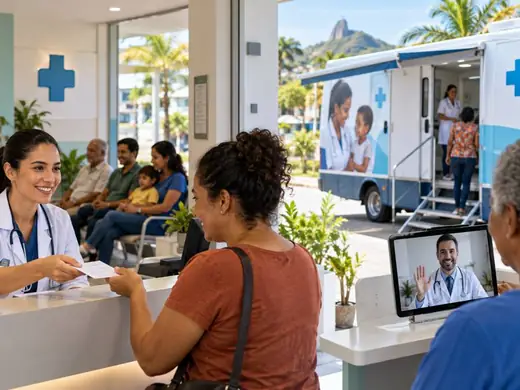

Cursinho Preparatório Gratuito
Preparatório para o ENEM, vestibulares e concursos, custeado pelas emendas parlamentares, com objetivo de atingir os 417 municípios da Bahia.
Deslize para o lado e conheça as ideias apresentadas para a Bahia.
Preparatório para o ENEM, vestibulares e concursos, custeado pelas emendas parlamentares, com objetivo de atingir os 417 municípios da Bahia.
Plataforma gratuita no celular: aulas, simulados e correção de redação para o aluno da rede pública.
Formação profissionalizante rápida, voltada para as áreas que movimentam a economia da Bahia.
Toda criança lendo e escrevendo até o 2º ano, com avaliação anual e apoio às escolas.
Aulas de recuperação no contraturno para quem ficou para trás na aprendizagem.
Capacitação permanente, material estruturado para professores(as) e valorização da classe.
Bônus anual para a escola e professores que batem a meta.
O Estado ligando o jovem estudante às empresas que geram emprego dentro de cada cidade do estado da Bahia.
Ensino médio técnico em irrigação, máquinas, agricultura de precisão e gestão rural.
Novos cursos e vagas conforme a necessidade de cada região.
Levar o CPM para a Bahia inteira, com objetivo de melhorar o ensino.
Transporte garantido até a escola e a faculdade, inclusive na zona rural.
Cinema para o aluno da rede pública, com estrutura itinerante onde não tem sala.
Espaço de esporte e convivência nos bairros e nas escolas.
Uma prova ao final do 1º, do 2º e do 3º ano do ensino médio. As três notas juntas garantem o acesso às universidades da Bahia.
Defender e cobrar valorização salarial progressiva para as forças de segurança.
Colete, arma e viatura em condições de uso. Policial não pode entrar em ocorrência com equipamento vencido.
Assistência psicológica e programas de saúde ocupacional permanentes.
Formação e treinamento continuado para as forças de segurança, em todas as regiões do estado.
Delegacias e batalhões reformados e equipados, principalmente no interior.
Rede estadual de videomonitoramento com câmeras inteligentes e leitura de placas, ligando os municípios à central de segurança do Estado.
Um canal do cidadão no celular: denúncia anônima, envio de informações, consulta de ocorrências e localização de delegacias.
Cursinho gratuito para quem quer vestir a farda, custeado pelas emendas.

SaúdeTeleconsulta com médicos, clínico geral, cardiologista, dermatologista, psiquiatra, ortopedista e outros gratuitamente.
Painel público das filas do SUS na Bahia: quantas pessoas esperam, há quanto tempo, em quais cidades e em quais especialidades.
Carretas de consultas, exames e cirurgias percorrendo as regiões com as maiores filas. O especialista vai até você.
Gabinete aberto rodando as cidades do interior. O deputado vai até você, não é você que precisa ir a Salvador.
Consulta pública para a população decidir o destino de parte das emendas. Quem vive o problema sabe melhor onde o dinheiro faz falta.
Portal público mostrando para onde foi cada real: qual cidade, qual obra, qual valor e qual prazo.
Mutirões de documentos e serviços, RG, CPF, certidões e orientação jurídica levados às comunidades rurais e aos bairros.
Receba materiais, avisos e novidades da campanha direto no WhatsApp.
Entrar no grupo do WhatsApp